Indirect light is recomputed every frame as the lighting changes — in real time, with no precomputation.
Real time
The same reconstruction rendered by three inverse-rendering methods along one camera path. Each panel is replayed at the GPU frame times we measured, so while the camera moves at the same speed for all three, a slower method shows a new image less often.
(4-scene average)
(trained under 5 skies)
vs. GI-GS
Same quality as GI-GS
Faster does not mean worse. Both models below start from the same reconstructed geometry and are trained on the same images under one sky; only how the light is computed differs. First the relit image, then its direct and indirect parts.
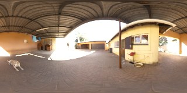
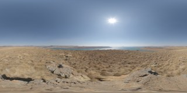
Relighting on TensoIR
The poster's qualitative comparison, with the environment maps behind it. All three methods are trained under a single sky and relit under skies none of them saw. The figure uses fireplace; the relighting numbers on the poster average all five relighting maps over four scenes.
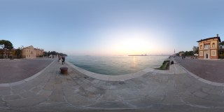
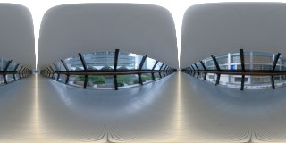
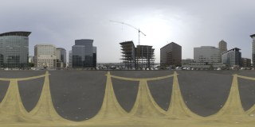
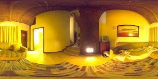
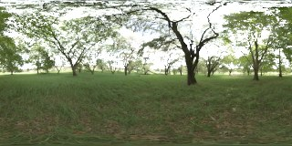
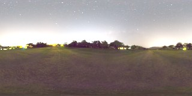
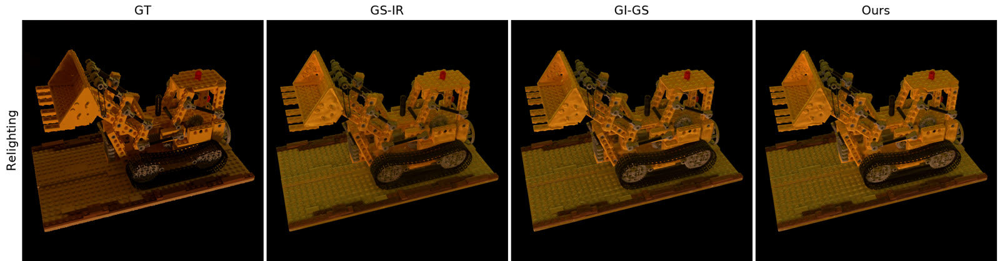
Training under five skies
Because a frame is cheap, we can train against five environment maps instead of one. Here the sky rotates ±60° while the camera holds still: trained under one sky, that sky's color is baked into the material; trained under five, it is not.
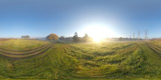
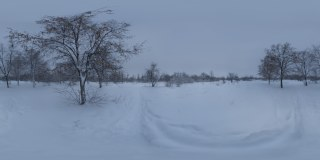
What the indirect pass contributes
The same frames split into direct lighting, the indirect term our method adds, and their sum. Removing indirect light at inference costs 0.5–2.8 dB on these scenes, depending on the sky.
Limitations
- Occlusion is computed from geometry alone, so it does not follow the light. Rotating the sky leaves the shaded regions where they were, and there are no hard cast shadows.
- Reconstructed normals and depth are still too noisy on large flat surfaces, which is why the demos place a reconstructed object in a virtual corner rather than reconstructing the whole room.
- Indirect specular is left out. It needs Monte Carlo sampling we cannot afford at frame rate.